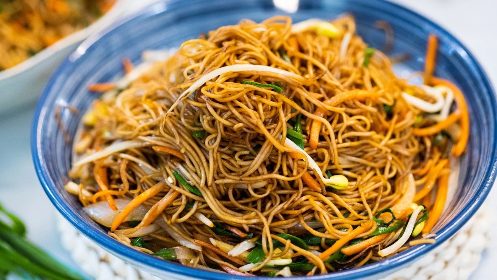

|

Description:
Chow Mein is a delicious Chinese dish consisting of stir-fried noodles, protein, vegetables soy sauce, oyster sauce, sesame oil, sugar, and cornstarch (thickening). It is a quick and versatile dish that can be prepared faster than home delivery. This recipe demonstrates how to create Chow Mein in your homes, coming from recipetineats.com
Time needed:
Preparation time - 10 minutes
Cooking time - 5 minutes
Total time - 15 minutes
|
Main
- 200g /6 oz chicken breast or thigh fillets , thinly sliced
- 4 cups green cabbage , finely shredded
- 1 1/2 tbsp peanut oil (or other cooking oil)
- 2 cloves garlic , finely chopped
- 200g /6 oz chow mein noodles
- 1 carrot , julienned
- 1 1/2 cups bean sprouts
- 3 green onions , cut into 5cm/2″ pieces
- 1/4 cup (65 ml) water
Chow Mein Sauce
- 2 tsp cornflour / cornstarch
- 1 1/2 tbsp soy sauce , all purpose or light (Note 4)
- 1 1/2 tbsp oyster sauce (sub Hoisin)
- 1 1/2 tbsp Chinese cooking wine OR Mirin (Note 5)
- 2 tsp sugar (reduce to 1 tsp if using Mirin)
- 1/2 tsp sesame oil
- White pepper
|
Sauce
- Mix together cornflour and soy sauce, then mix in remaining ingredients.
- Alternative: Use 1/3 cup Chinese All Purpose Stir Fry Sauce, if you have some in stock.
Chicken and Noodles
- Marinate Chicken: Pour 1 tbsp of Sauce over the chicken, mix to coat, set aside to marinate for 10 minutes.
- Noodles: Prepare the noodles according to the packet instructions (my pack says soak in boiled water for 1 minute), then drain.
Cooking
- Heat oil in wok or large fry pan over high heat.
- Add garlic and stir fry for 10 seconds or until it starts to turn golden, don’t let it burn.
- Add chicken and stir fry until the surface gets a tinge of browning but inside is still raw – about 1 minute.
- Add the cabbage, carrot, and the white pieces of shallots (i.e. from the base of the stalk). Stir fry for 1 1/2 minutes until the cabbage is mostly wilted.
- Add the noodles, Sauce and water*. Stir fry for 1 minute, tossing constantly.
- Add bean sprouts and remaining shallots/scallions. Toss through for 30 seconds or until the bean sprouts just start to wilt.
- Remove from heat and serve immediately.
Servings: 2-3
|